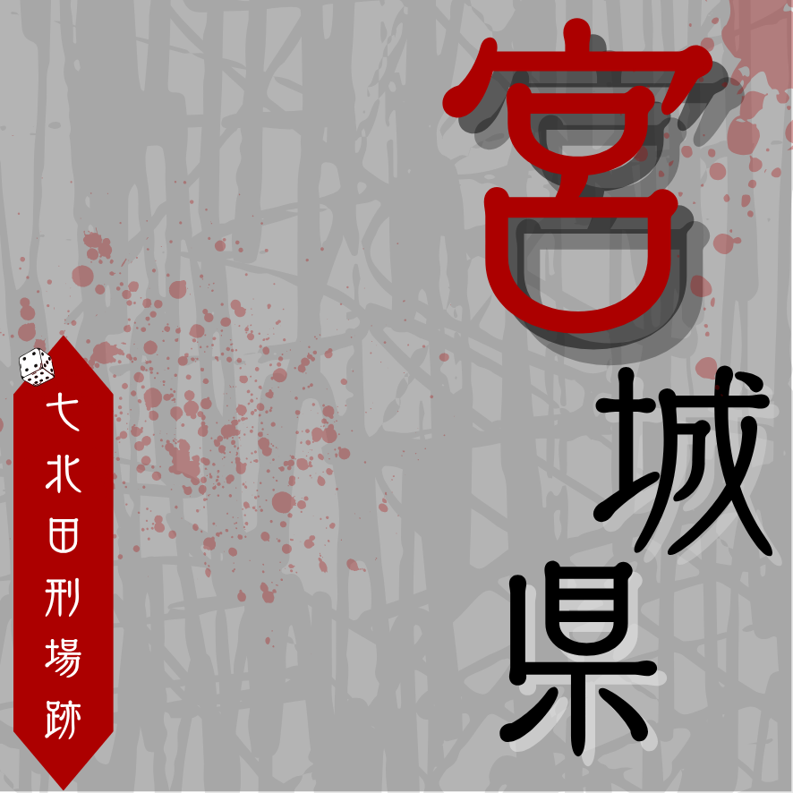
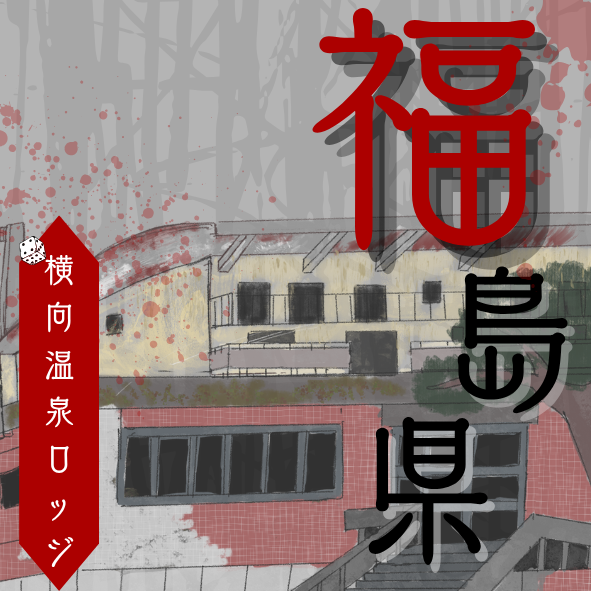
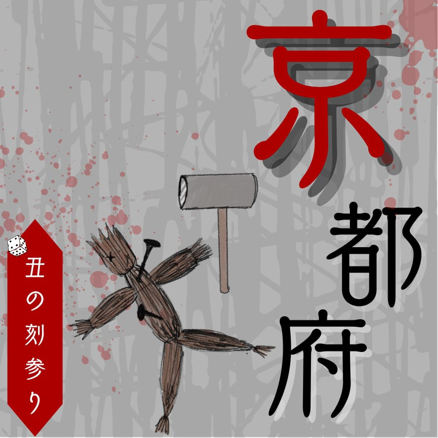

各地域
北海道地方
北海道
東北地方
青森県
秋田県
岩手県
宮城県
山形県
福島県
關東地方
東京都
神奈川県
埼玉県
千葉県
茨城県
栃木県
群馬県
中部地方
新潟県
富山県 石川県
石川県
石川県福井県
長野県
山梨県
愛知県
岐阜県
静岡県
近畿地方
大阪府
兵庫県
滋賀県
京都県
奈良県
和歌山県
三重県
四国地方
香川県
徳島県
愛媛県
高知県
九州地方
福岡県
大分県
宮崎県
熊本県
佐賀県
長崎県
鹿児島県
沖縄地方
沖縄県